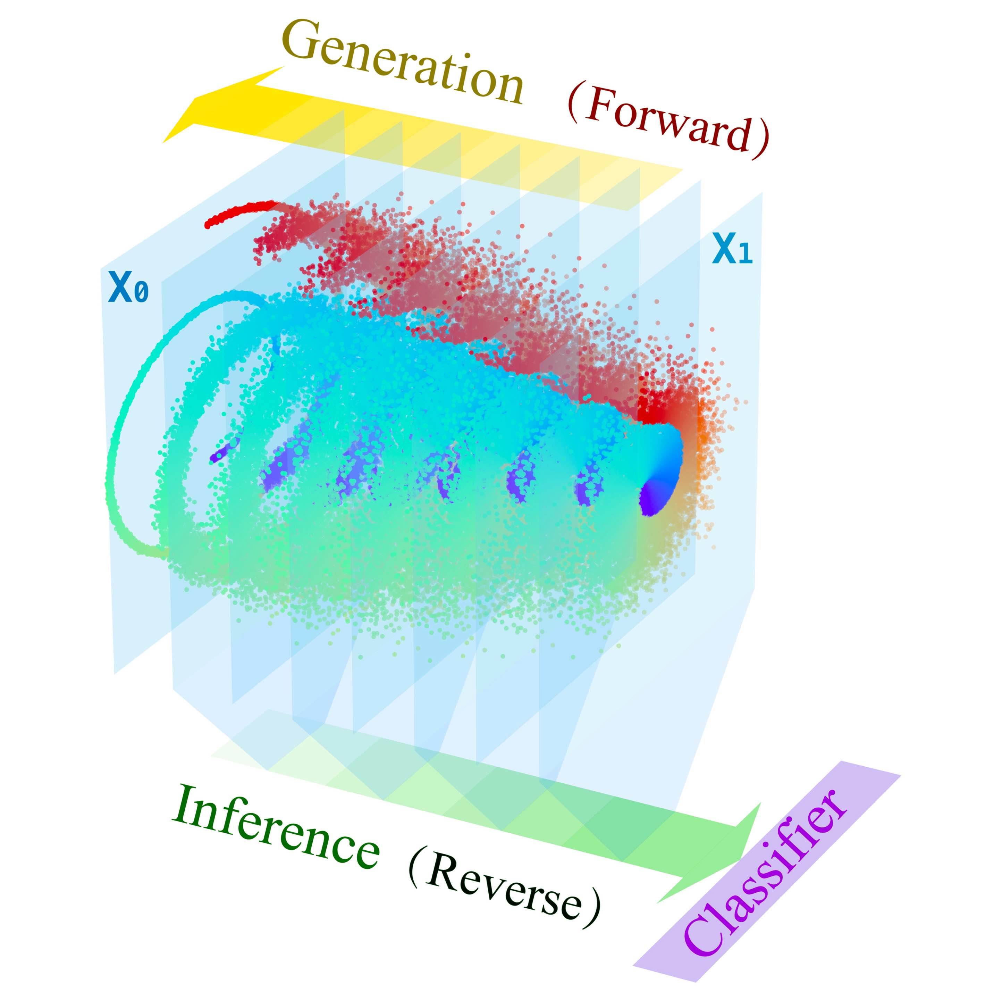
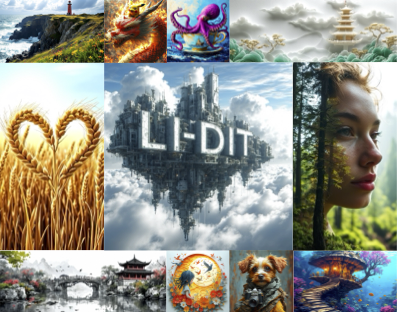
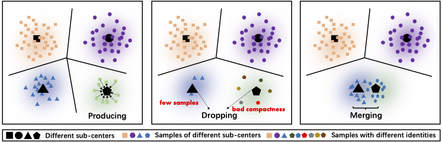
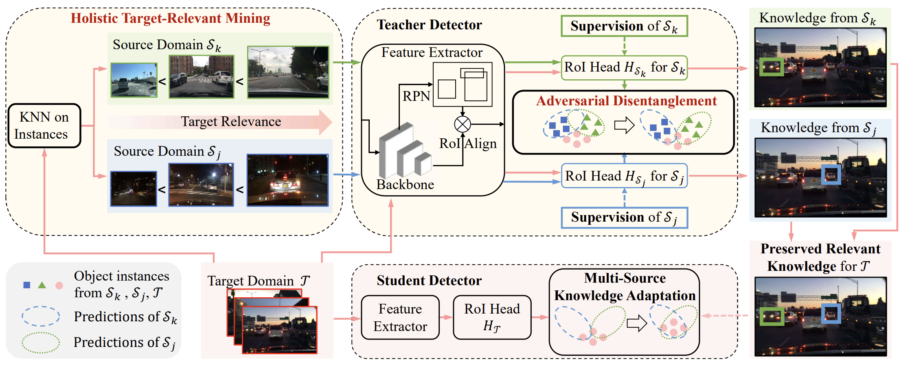
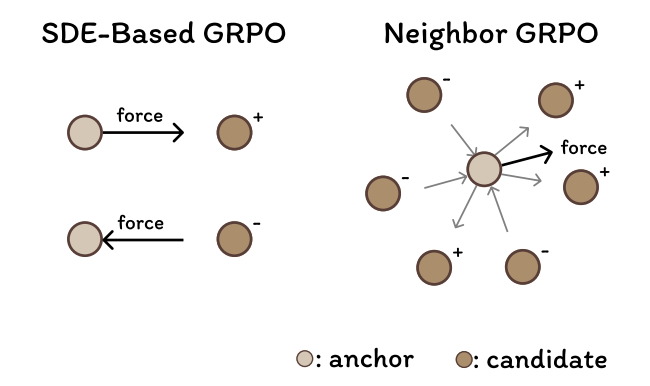
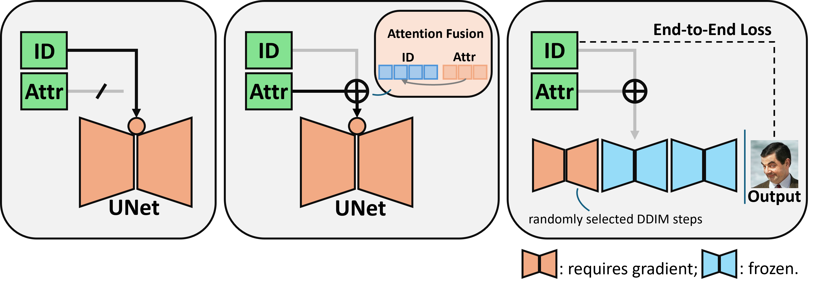

|
Bingqi Ma I'm a researcher at an AI venture that specializes in multi-modal generation. Before this, I worked at the Base Model R&D Department of SenseTime Research, supervised by Guanglu Song and Yu Liu. I obtained my Bachelor's degree in 2019 and Master's degree in 2022 from School of Computer Science and Engineering at Beihang University. |
{kind=link}
ResearchCurrently, my main research focuses on the pretraining and application techniques of multi-modal generative models. Before this, I led a small team responsible for the pretraining research of SenseMirage, a powerful and artistic image diffusion model. I also have extensive research experience in applying large-scale visual models to downstream tasks, including retrieval, recognition, and perception. We are recruiting research interns with a specialization in diffusion models. Welcome to email me for further details. |
|  |
Pretrained Reversible Generation as Unsupervised Visual Representation
Learning
Rongkun Xue, Jinouwen Zhang, Yazhe Niu, Dazhong Shen, Bingqi Ma, Yu Liu, Jing Yang ICCV, 2025 A framework to repurpose pretrained score/flow-based generative models by reversing their generation process to extract unsupervised, hierarchy-selectable features for downstream discriminative tasks. |

|
EasyRef: Omni-Generalized Group Image Reference for Diffusion Models via
Multimodal LLM
Zhuofan Zong, Dongzhi Jiang, Bingqi Ma, Guanglu Song, Hao Shao, Dazhong Shen, Yu Liu, Hongsheng Li. ICML, 2025 A plug-and-play adaptation method that allows diffusion models to be conditioned on multiple reference images alongside the textual prompt leveraging the image–text comprehension capabilities of multimodal large language models |
|  |
Exploring the Role of Large Language Models in Prompt Encoding for
Diffusion Models
Bingqi Ma, Zhuofan Zong, Guanglu Song, Hongsheng Li, Yu Liu. NeurIPS, 2024 A pioneering study on employing large language models as text encoders for diffusion models. It offers rigorous analyses and practical solutions for effectively leveraging decoder-only large language models in this role, and its methods have been adopted in prominent projects such as Hunyuan-Video. |

|
MoVA: Adapting Mixture of Vision Experts to Multimodal Context
Zhuofan Zong*, Bingqi Ma*, Dazhong Shen, Guanglu Song, Hao Shao, Dongzhi Jiang, Hongsheng Li, Yu Liu. (*equal contribution) NeurIPS, 2024 A multimodal large language model capable of automatically selecting the vision encoder that best matches the task based on the user’s instruction, achieving advanced performance on multiple benchmarks in various tasks. |
|  |
Rethinking Robust Representation Learning Under Fine-grained Noisy
Faces
Bingqi Ma, Guanglu Song, Boxiao Liu, Yu Liu. ECCV, 2022 A large-scale face recognition training algorithm that is robust to noisy data and automatically resolves conflicts introduced by fine-grained noise. |
|  |
Target-relevant knowledge preservation for multi-source domain adaptive
object detection
Jiaxi Wu, Jiaxin Chen, Mengzhe He, Yiru Wang, Bo Li, Bingqi Ma, Weihao Gan, Wei Wu, Yali Wang, Di Huang. CVPR, 2022 A domain adaptive object detection method for multi-source data, effectively mitigating the issue of knowledge degradation in multi-source fusion scenarios. |
Tech Report & Pre-print Papers |
|  |
Neighbor GRPO: Contrastive ODE Policy Optimization Aligns Flow Models
Dailan He, Guanlin Feng, Xingtong Ge, Yazhe Niu, Yi Zhang, Bingqi Ma, Guanglu Song, Yu Liu, Hongsheng Li Arxiv, 2025 A GRPO-based method that aligns flow matching models via initial noise perturbation, effectively bypassing the need for SDEs while preserving deterministic ODE efficiency. |

|
ADT: Tuning Diffusion Models with Adversarial Supervision
Dazhong Shen, Guanglu Song, Yi Zhang, Bingqi Ma, Lujundong Li, Dongzhi Jiang, Zhuofan Zong, Yu Liu Arxiv, 2025 A post-training approach for diffusion models, grounded in adversarial generative training that significantly enhances both distribution alignment and image quality. |
|  |
High-Fidelity Diffusion Face Swapping with ID-Constrained Facial
Conditioning
Dailan He, Xiahong Wang, Shulun Wang, Guanglu Song, Bingqi Ma, Hao Shao, Yu Liu, Hongsheng Li Arxiv, 2025 A diffusion model-based image face-swapping method that decouples identity information and attribute information, demonstrating superior identity similarity and attribute consistency. |

|
Towards Large-scale Masked Face Recognition
Manyuan Zhang, Bingqi Ma, Guanglu Song, Yunxiao Wang, Hongsheng Li, Yu Liu Arxiv, 2023 Top1 solution for the Unconstrained Track of ICCV 2021 MFR Challenge. The work spanned the entire pipeline, from data cleaning and model architecture design to training optimization. Portions of these techniques were contributed to Sensetime FRVT submissions. |